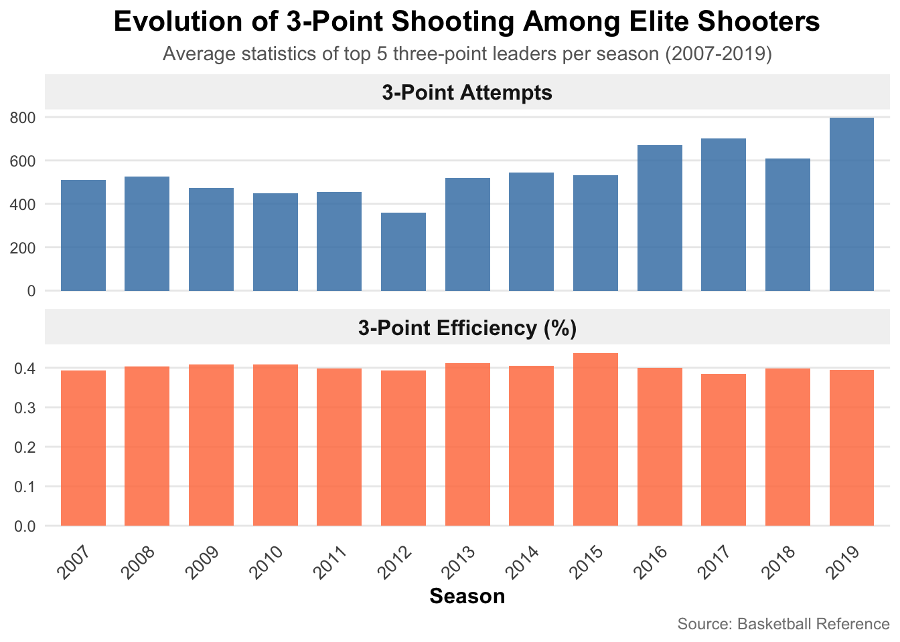

We begin our analysis by examining the evolution of the three-point shot. Since the NBA started tracking threes in 1979, the league has undergone a dramatic transformation in both volume and efficiency. By exploring how three-point attempts and accuracy have changed over time, we can better understand the shifting strategies and playstyles that define the modern game.
Code
ggplot(data = league_avgs, aes(x = start_year, y = x3pa_num)) +geom_line(color ="steelblue", size =1.2) +geom_point(color ="steelblue", size =3, alpha =0.7) +labs(title ="3-Point Attempts Over Time",subtitle ="Average 3-point attempts per game by season (1979-2025)",x ="Season",y ="3-Point Attempts per Game",caption ="Source: Basketball Reference" ) +scale_y_continuous(breaks =seq(0, 40, 5)) +scale_x_continuous(breaks =seq(1979, 2025, 5)) +theme_minimal() +theme(plot.title =element_text(size =16, face ="bold", hjust =0.5),plot.subtitle =element_text(size =11, hjust =0.5, color ="gray40"),plot.caption =element_text(size =9, color ="gray50"),axis.title =element_text(size =12, face ="bold"),axis.text =element_text(size =10),panel.grid.minor =element_blank(),panel.grid.major =element_line(color ="gray90") )
From this graph, we can clearly see a steady rise in three-point attempts over time. A closer look reveals a distinct period in which the three-point shot surged in both usage and importance, signaling a major shift in how the game was played. Let’s identify this pivotal era and explore the factors that sparked its transformation.
From this table, the most significant surge occurs between 2014 and 2019. This period stands out as a transformative era for the three-point shot. To understand what drove this rapid rise, we’ll take a closer look at the top three-point shooters from these years and explore to understand what happened.
Code
ggplot(yearly_stats_long, aes(x =factor(Year), y = Value, fill = Metric)) +geom_col(width =0.7, alpha =0.85) +facet_wrap(~Metric, scales ="free_y", ncol =1, strip.position ="top") +scale_fill_manual(values =c("3-Point Attempts"="steelblue", "3-Point Efficiency (%)"="coral")) +labs(title ="Evolution of 3-Point Shooting Among Elite Shooters",subtitle ="Average statistics of top 5 three-point leaders per season (2007-2019)",x ="Season",y =NULL,caption ="Source: Basketball Reference" ) +theme_minimal() +theme(plot.title =element_text(size =16, face ="bold", hjust =0.5),plot.subtitle =element_text(size =11, hjust =0.5, color ="gray40"),plot.caption =element_text(size =9, color ="gray50"),axis.text.x =element_text(angle =45, hjust =1, size =10),axis.title =element_text(size =12, face ="bold"),strip.text =element_text(size =12, face ="bold"),strip.background =element_rect(fill ="gray95", color =NA),panel.grid.minor =element_blank(),panel.grid.major.x =element_blank(),legend.position ="none" )

From this graph, we see that three-point attempts among elite shooters steadily increased over time, which aligns with the trend observed earlier. What is particularly striking is that their efficiency remained consistently high despite the rising volume. This suggests that top shooters became even more skilled by expanding their shot volume without sacrificing accuracy. This development is crucial in elevating the value of the three-point shot, as players were now able to score efficiently at much higher frequencies. Next, we will look at the winningest teams from this era to evaluate their playstyle and determine whether they embraced the three-point shot.
Over the years, we can see a clear pattern: the teams that won the most games are also the ones taking the most three-point shots. But why did this trend emerge? As players became more skilled, elite shooters were able to increase their three-point volume while maintaining high efficiency. This shift forced teams to recognize the true value of the three-pointer from a strategic standpoint.
A player hitting 40% from three generates 1.2 points per shot, while a player shooting 50% on two-pointers produces only 1.0 point per shot. As long range accuracy continued to improve, the advantage of the three-point shot became undeniable. Teams realized that by incorporating more threes into their offensive strategy, they could maximize scoring potential without sacrificing efficiency. This evolution not only changed individual player behavior but also reshaped overall team strategies, making the three-point shot a central element of the modern game.
3.2 The Ripple Effect: How the Three Reshaped the Court
We have seen that the most successful teams take more three-point shots. To explain the underlying mechanics behind the surge in three-point volume we are going to look at how teams created the opportunities to take so many shots. The answer lies in pace (possessions per game).
Code
ggplot(league_stats, aes(x = season_start, y = pace)) +geom_line(color ="#1ABC9C", size =1.3) +geom_point(color ="#1ABC9C", size =2.5) +labs(title ="Pace of Play Accelerates the 3-Point Revolution",subtitle ="League-wide pace: possessions per 48 minutes (1980–2025)",x ="Season",y ="Pace (Possessions per 48)",caption ="Source: Basketball Reference" ) +geom_vline(xintercept =2014, linetype ="dashed", color ="gray50") +annotate("text", x =2015, y =max(league_stats$pace) -1,label ="Start of rapid pace rise", color ="gray30", hjust =0) +theme_minimal() +theme(plot.title =element_text(size =16, face ="bold", hjust =0.5),plot.subtitle =element_text(size =11, hjust =0.5, color ="gray40"),panel.grid.minor =element_blank() )
Increasing three-point attempts didn’t just require better shooters. It required a faster, more dynamic style of play. Teams had to generate more possessions to fully capitalize on the scoring advantage of the three-pointer. This shift in tempo and strategy gave rise to what is now known as the “Pace and Space” era, where speed, spacing, and efficient long-range shooting became the cornerstone of winning basketball.
Now that the game is faster, who is taking the shots? It used to be only guards. Now, to get that volume, big men have to shoot too.
league_avgs <- league_avgs |>mutate(ft_pct =as.numeric(ft_percent) *100 )ggplot(league_avgs,aes(x = start_year, y = ft_pct)) +geom_line(color ="#9B59B6", size =1.4) +geom_point(color ="#9B59B6", size =2.5) +geom_smooth(method ="lm", se =FALSE, linetype ="dashed", color ="#34495E", size =0.8) +scale_x_continuous(breaks =seq(1980, max(league_avgs$start_year), 5)) +scale_y_continuous(breaks =seq(70, 80, 1), limits =c(70, 80)) +labs(title ="The Skill Dividend",subtitle ="League average free throw percentage (1979–2025)",x ="Season",y ="Free Throw Percentage (%)",caption ="Source: Basketball Reference" ) +annotate("text", x =1990, y =74, label ="90s/00s Era\n~73-75%", size =3.5, color ="#9B59B6", fontface ="italic") +annotate("text", x =2020, y =78.5, label ="Modern Era\n~78-79%", size =3.5, color ="#9B59B6", fontface ="italic") +theme_minimal() +theme(plot.title =element_text(size =16, face ="bold", hjust =0.5),plot.subtitle =element_text(size =11, hjust =0.5, color ="gray40"),panel.grid.minor =element_blank() )
Increasing the pace wasn’t enough; teams needed a fundamental upgrade in skill across the roster. As evidenced by the league wide rise in Free Throw percentage, the average modern player is simply a more capable shooter than their predecessors. This “skill dividend” allowed the revolution to spread to the frontcourt. Initially a weapon reserved for guards, the three point shot was adopted by Power Forwards and eventually Centers.
The heatmap above visualizes a core strategic insight of the modern era: Spacing. When five players, including the Center, can shoot, the floor spreads completely. This forces the defense to guard the perimeter. A Center who stays in the paint today is often a liability, not because they can’t score, but because they fail to create the space that drives efficient offense.
Code
league_avgs_scoring <- league_avgs |>mutate(fg_num =as.numeric(fg),fga_num =as.numeric(fga),x3p_made =as.numeric(x3p),fta_num =as.numeric(fta),ftm_num =as.numeric(ft),pts_num =as.numeric(pts) )scoring_mix <- league_avgs_scoring |>transmute( start_year,pts_total = pts_num,pts_3p =3* x3p_made,pts_ft = ftm_num,pts_2p = pts_total - pts_3p - pts_ft ) |>filter(!is.na(pts_total), pts_total >0) |>mutate(share_3p = pts_3p / pts_total,share_ft = pts_ft / pts_total,share_2p = pts_2p / pts_total )scoring_mix_ortg <- scoring_mix |>inner_join( league_stats |>select(season_start, ortg),by =c("start_year"="season_start") ) |>mutate(era =case_when( start_year <2000~"Pre-2000", start_year <2014~"Early 3PT Era",TRUE~"Modern Pace-and-Space" ) )scoring_long <- scoring_mix_ortg |>select(start_year, era, share_2p, share_3p, share_ft) |>pivot_longer(cols =c(share_2p, share_3p, share_ft),names_to ="source",values_to ="share" ) |>mutate(source =recode(source,"share_2p"="2-Point Field Goals","share_3p"="3-Point Field Goals","share_ft"="Free Throws") )ggplot(scoring_long,aes(x = start_year, y = share, fill = source)) +geom_area(alpha =0.9, color ="white", size =0.3) +scale_fill_manual(values =c("2-Point Field Goals"="#95A5A6","3-Point Field Goals"="#3498DB","Free Throws"="#E74C3C" )) +scale_y_continuous(labels = scales::percent_format(scale =100)) +scale_x_continuous(breaks =seq(1980, max(scoring_long$start_year), 5)) +labs(title ="How NBA Offenses Get Their Points",subtitle ="Shares of total points from 2s, 3s, and free throws (1979–2025)",x ="Season",y ="Share of Total Points",fill ="Point Source",caption ="Source: Basketball Reference" ) +theme_minimal() +theme(plot.title =element_text(size =16, face ="bold", hjust =0.5),plot.subtitle =element_text(size =11, hjust =0.5, color ="gray40"),legend.position ="bottom" )
Code
get_2p_efficiency <-function(year) {Sys.sleep(2) url <-paste0("https://www.basketball-reference.com/leagues/NBA_", year, "_per_game.html")tryCatch({ page <-read_html(url) df <- page |>html_element("table#per_game_stats") |>html_table() |>clean_names() |>filter(player !="Player") |>mutate(season = year,x2p_pct =as.numeric(x2p_percent), # 2P%pos_clean =str_remove(pos, "-.*") ) |>select(season, player, pos_clean, x2p_pct)# Calculate league average 2P% and Center 2P% league_avg <- df |>summarize(season =first(season),group ="League Average",avg_2p_pct =mean(x2p_pct, na.rm =TRUE) ) center_avg <- df |>filter(pos_clean =="C") |>summarize(season =first(season),group ="Centers",avg_2p_pct =mean(x2p_pct, na.rm =TRUE) )bind_rows(league_avg, center_avg) }, error =function(e) {message(paste("Error for year", year))return(NULL) })}# Scrape 2P% datatarget_years_2p <-c(1990, 1995, 2000, 2005, 2010, 2015:2024)efficiency_data <-map_dfr(target_years_2p, get_2p_efficiency)# Plot: Line chart comparing League vs Centersggplot(efficiency_data,aes(x = season, y = avg_2p_pct, color = group)) +geom_line(size =1.4) +geom_point(size =2.5) +scale_color_manual(values =c("League Average"="#95A5A6","Centers"="#E74C3C" )) +scale_x_continuous(breaks =seq(min(efficiency_data$season),max(efficiency_data$season), 5)) +scale_y_continuous(labels = scales::percent_format(scale =1),limits =c(0.40, 0.70)) +labs(title ="The Layup Line",subtitle ="2-point field goal percentage: League average vs Centers (1990–2024)",x ="Season (End Year)",y ="2-Point FG%",color ="",caption ="Source: Basketball Reference" ) +annotate("text", x =2000, y =0.48, label ="Clogged lanes\nTough post-ups", size =3.5, color ="#E74C3C", fontface ="italic") +annotate("text", x =2020, y =0.65, label ="Open dunks, lobs\nNo traffic", size =3.5, color ="#E74C3C", fontface ="italic") +theme_minimal() +theme(plot.title =element_text(size =16, face ="bold", hjust =0.5),plot.subtitle =element_text(size =11, hjust =0.5, color ="gray40"),legend.position ="bottom",panel.grid.minor =element_blank() )
This is the core strategic insight. As three-point shooting became more prevalent, the floor naturally spread, reducing the value of midrange shots while opening up driving lanes which we can see from the stacked area chart. With big men stepping out to the perimeter, the court became much more spacious, creating opportunities for players to attack the rim. This marked one of the most significant strategic shifts in NBA history. Teams recognized that a long two-pointer, historically making around 38 to 40 percent of the time, was mathematically inferior to a three-pointer. Consequently, the midrange jumper gradually disappeared from the modern game. Interestingly, the trend in the chart above shows that midrange feild goals declined. Layups and dunks actually increased highlighting the shift toward high-efficiency scoring opportunities as NBA players can very easily make open shots near the rim.
With these playstyles making scoring more efficient, let’s examine how they impacted overall scoring trends.
Was this shift in strategy worth it? The results are clear. By optimizing shot selection and developing greater skill, teams have achieved unprecedented scoring levels. The league has moved from the defensive struggles of the early 2000s to a modern era defined by efficiency and precision. The three-point revolution did not just reshape the spacing on the court; it transformed NBA offense into a finely tuned, high-scoring machine.